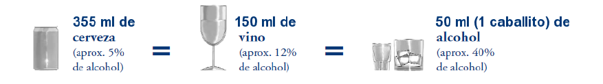

A continuación, una bebida se refiere a cualquier bebida que contiene aproximadamente 14 gramos de etanol o alcohol puro. Las bebidas que siguen a continuación son de diferentes tamaños sin embargo su contenido de alcohol es el mismo. Es por eso que todas son consideradas una bebida. 